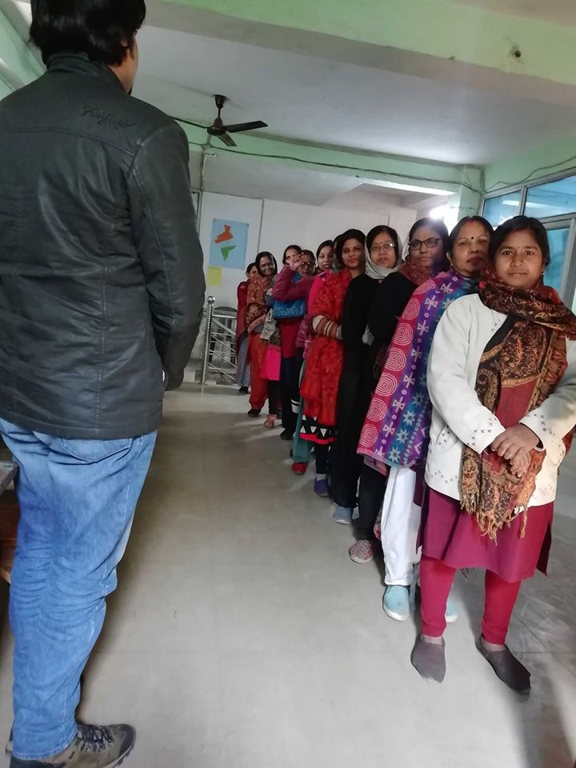
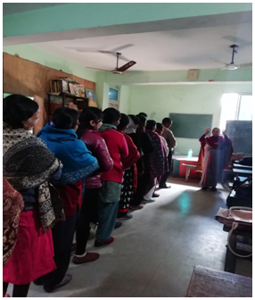
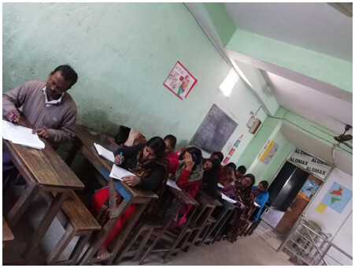

Project archive · 2019–2020 · Completed
Project ALIVE
ALIVE stood for Advancing Learning, Inclusion and Values in Education. It asked teachers and school teams to examine who could take part in everyday school life, and who was being left out.
Diksha worked with five government and low-fee private schools in partnership with the U.S. Consulate, Kolkata. The project used the Index for Inclusion to bring questions of dignity, participation and shared responsibility into conversations with teachers and students.
Read the project record
The question inside ALIVE
What did inclusion look like during an ordinary school day?
The project treated inclusion as part of classroom practice and school culture, not as a separate activity for a few children.
Teachers looked at what happened in classrooms, staff rooms and playgrounds. The discussion included how children were treated, who participated, how decisions were made and whether school practices respected every child, whatever their background or identity.
Diksha’s project page also placed responsibility outside the classroom: among educators, institutional staff, families and the wider school community. Work on the environment and shared spaces formed part of that conversation.

Work with five schools
The annual report records work with teachers and students.
Fifty teachers from five government and low-fee private schools took part directly. More than 150 students joined activities that introduced the same questions in a form they could discuss.
Teachers participated in work at their schools and in a larger foundation workshop on inclusive education, systems thinking, and education policy and practice in India. The workshop brought educators from the participating government and low-fee schools into the same room.
The surviving public record documents participation and the subjects covered. It does not name the five schools or provide a school-by-school assessment after the project.
The working framework
The Index for Inclusion helped schools examine their own practice.
The Index for Inclusion was developed by Professors Tony Booth and Mel Ainscow. It gives school communities questions and a process for looking at their culture, policies and daily practice.
ALIVE used the Index as a discussion process among teachers. The project connected their conversations with empathy, equity, participation, community involvement, the environment, the Sustainable Development Goals and relevant national policies.
Teacher workshops
Teachers worked through the questions together.
The photographs kept on the earlier Project ALIVE page show group exercises and workshop conversations. The public page does not identify the schools or individual participants.

Inclusion was examined through situations teachers recognised from their own schools.
Group exercises gave educators time to compare what they saw in classrooms and common spaces. The foundation workshop then connected those observations with systems thinking and the wider policy setting.
Reading the archive carefully
Some of the project’s longer-term aims were not measured publicly.
The page published during the project described what Diksha hoped would follow: changes in teacher practice, more participation by students, and school policies that reflected different learners’ needs.
The 2019–20 annual report confirms the schools, teachers, students and workshop work. It does not report whether those changes lasted after the project closed. This archive keeps the intended change separate from what the available records verify.
Project partnership
U.S. Consulate, Kolkata and Diksha Foundation
The U.S. Consulate, Kolkata supported Project ALIVE. Diksha worked with the participating schools, teachers and students during the 2019–20 project period.
The source record
Read Diksha’s annual reports.
The 2019–20 annual report preserves the participation figures and the year’s Project ALIVE update.